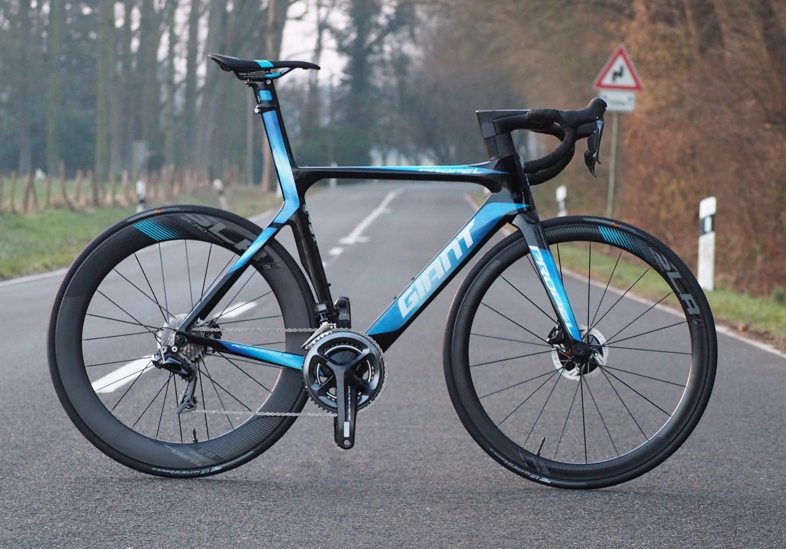
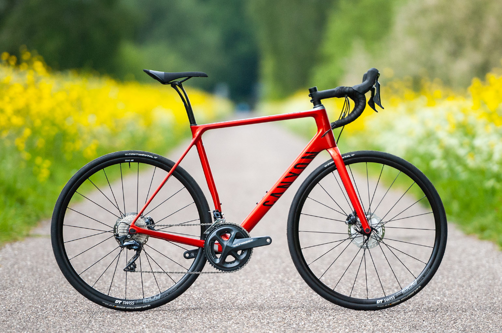
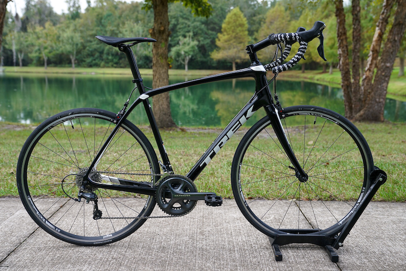
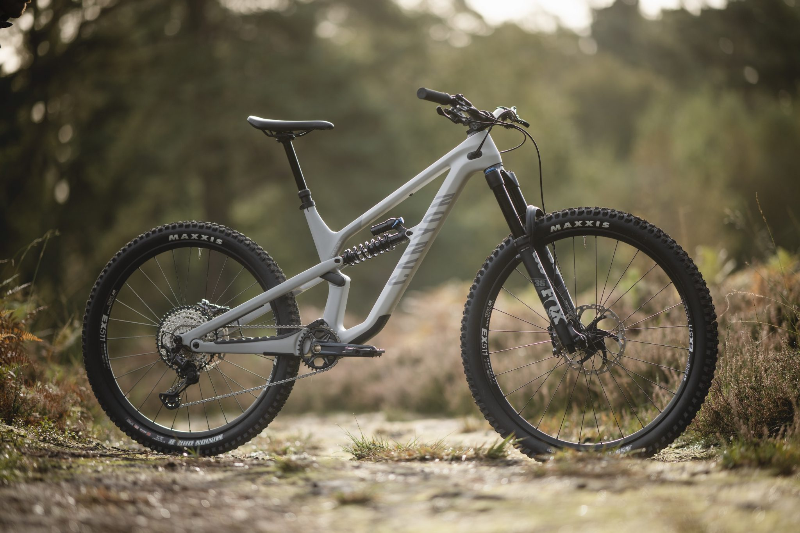
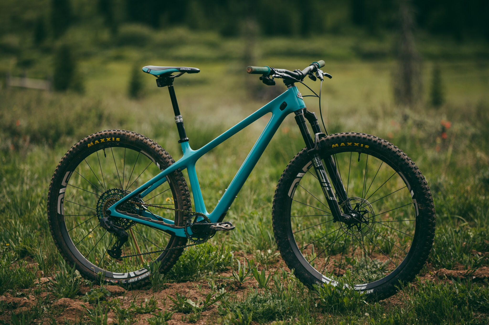
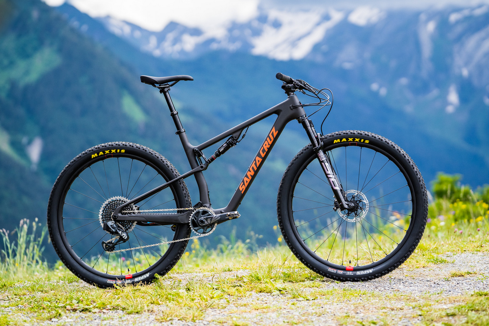
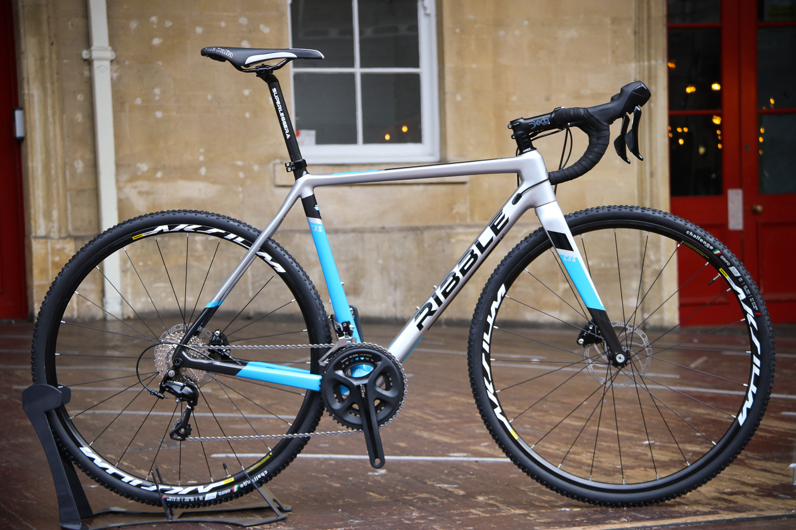
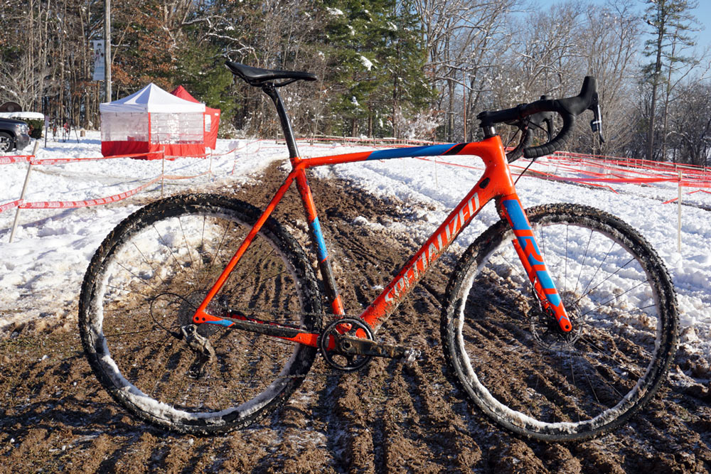
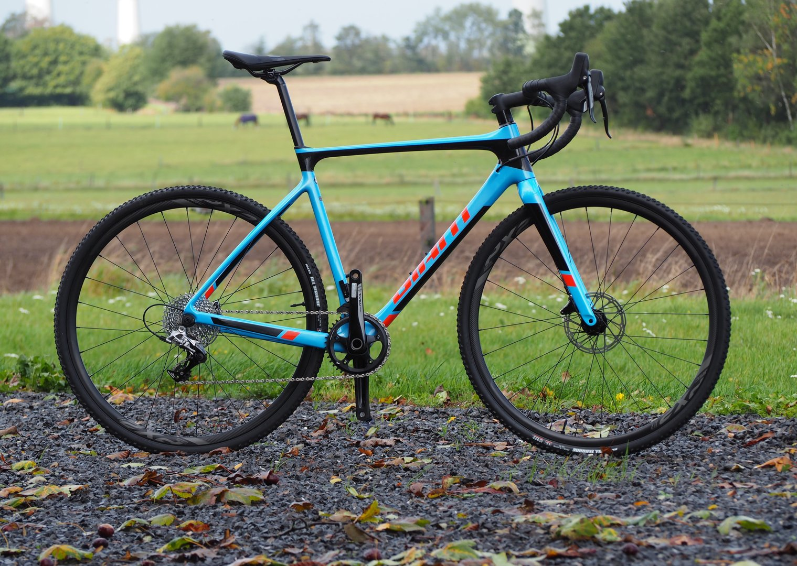

Road Bikes Equipped with lightweight frames, drop-handlebars and narrow tyres, road bikes offer a quick and comfortable road riding experience.
There's a huge range of road bikes to choose from whether you're entering a pro-level race or just want a speedier commute on two wheels. Here are some recommended road bikes:
Aero road bikes are aerodynamically optimised bikes designed to minimise drag and maximise speed. They are ideal for flat roads or descents where speeds will be high and limiting wind resistance is vital.
Giant propel:

Climbing road bikes are made to be as light as possible, they feature slim tubes and very light components. The lighter the bike the easier climbing will be, you will be able to climb faster and conserve more energy.
Canyon Ultimate:

Endurance road bikes are designed to be more comfortable. The geometry and construction of the bikes puts the rider in a slightly more upright position it also has slightly wider tires, allowing for a longer more comfortable ride.
Trek Domane:

Mountain Bikes are designed for off-road cycling. They incorporate features such as suspension to enhance durability and performance in rough terrain, this makes them much heavier. If you're looking to eplore outdoors and take on challenging terrains
then this is the choice.
Trail bikes are versatile, light, and exceedingly capable. They are designed to have as much fun as possible on any given terrain.
Canyon Spectral:

Hard tail bikes do not have a rear shock and have either a suspension fork or a rigid fork. Because they have fewer components, hardtails are cheaper than full-suspension bikes, they can ride anything from dirt roads to singletrack, but they will struggle when the trails get more technical.
Yeti ARC:

Cross country bikes feature steeper geometry than other types of mountain bikes and are designed for pure speed and efficiency. They have less suspension travel than trail bikes and may not be able to handle rough, technical trails.
Santa Cruz blur:

CycloCross bikes resemble road bikes in appearance, however, there are a number of modifications that allow it to tackle a variety of terrains.
From a winter road bike, everyday commuter, even as a light trail mountain bike, there's plenty of different directions you can go with a cyclocross bike.
Cross bikes have wider, knobblier tyres for non smooth surfaces. They typically have a shorter frame reach for a more upright riding position that improves handling and stability, especially when riding in muddy conditions.
Here are some recommendations for good CycloCross bikes:
Ribble CX5:

Specialized CruX:

Giant TCX Advanced:
